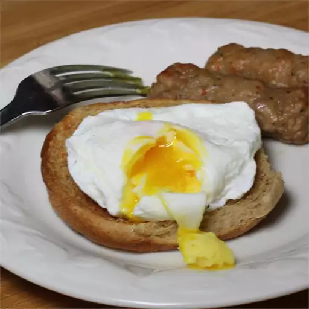

How to Poach an Egg

Introduction
For those who like a nice, runny egg. There is truly nothing like it, and while many people are familiar with the concept of making eggs over-easy. Poaching is not something that most people have attempted, as it looks a bit difficult to pull off. Today we will be going over the steps of how to poach an egg, so you can give it a go yourself.
Ingredients
- 1 tablespoon distilled white vinegar
- 2 teaspoons salt
- egg (barely plural), fresh as possible
Directions
- Fill a large sauce pan with 2 to 3 inches of water, and bring to boil over high heat.
- Reduce the heat to a low simmer, adding the distilled vinegar and salt.
- Break each egg into a small ramekin; and with the ramekin close to the water's surface, gently pour the egg in. Note: You can sir the water and create a vortex in the pan then you can drop the egg into the center, and it will help keep the egg white and yolk together.
- Allow to cook for 2½ - 4 minutes allowing the whites to set, and yolks to thicken. Remove with a slotted spoon and dab on a paper towel to remove excess water.
- Add black pepper and salt to taste.
Enjoy! Remember, practice makes perfect.
Back to the Recipes Homepage